mism4tchedsocks
fav works / art index
(1).jpg) |
aboutdate: 17/01/2025 |
| 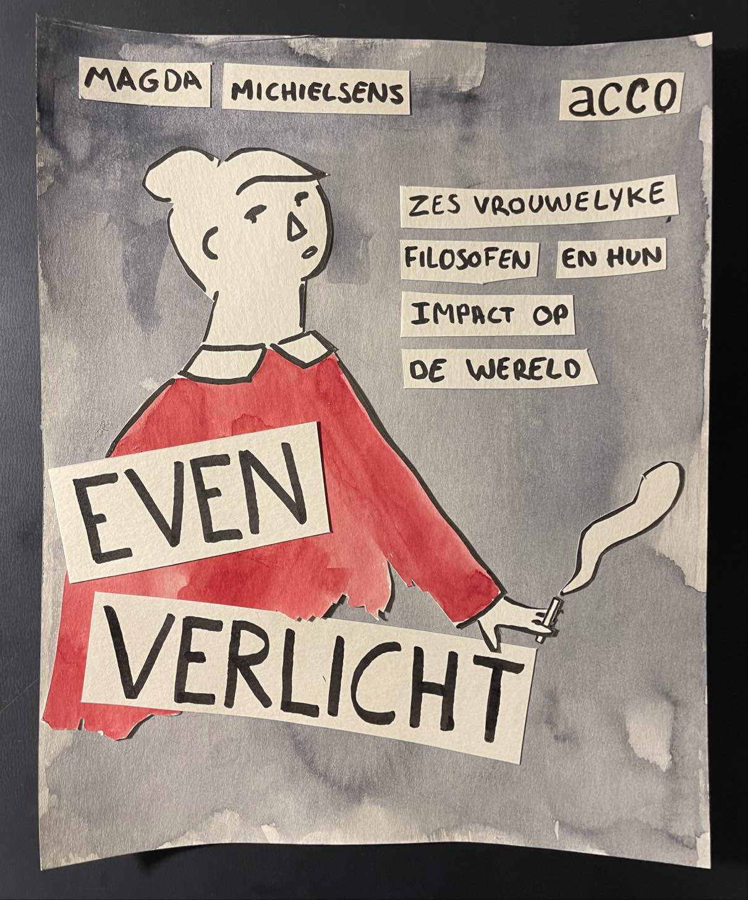 | aboutdate: 27/11/2024 |
 |
aboutdate: 23/07/2024 |
| 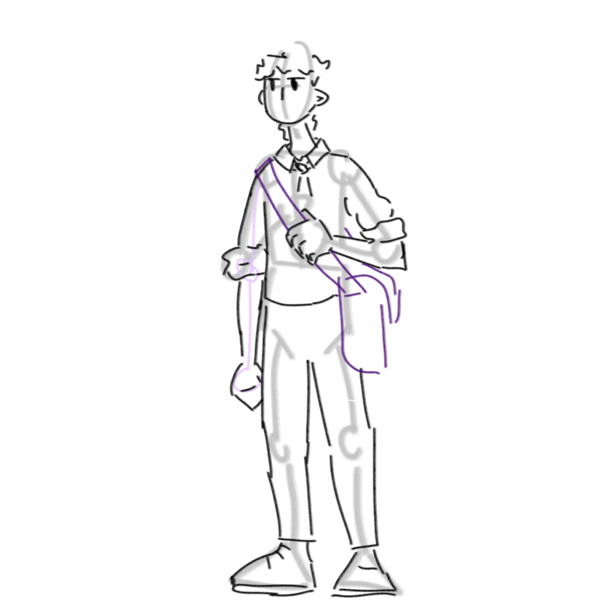 | 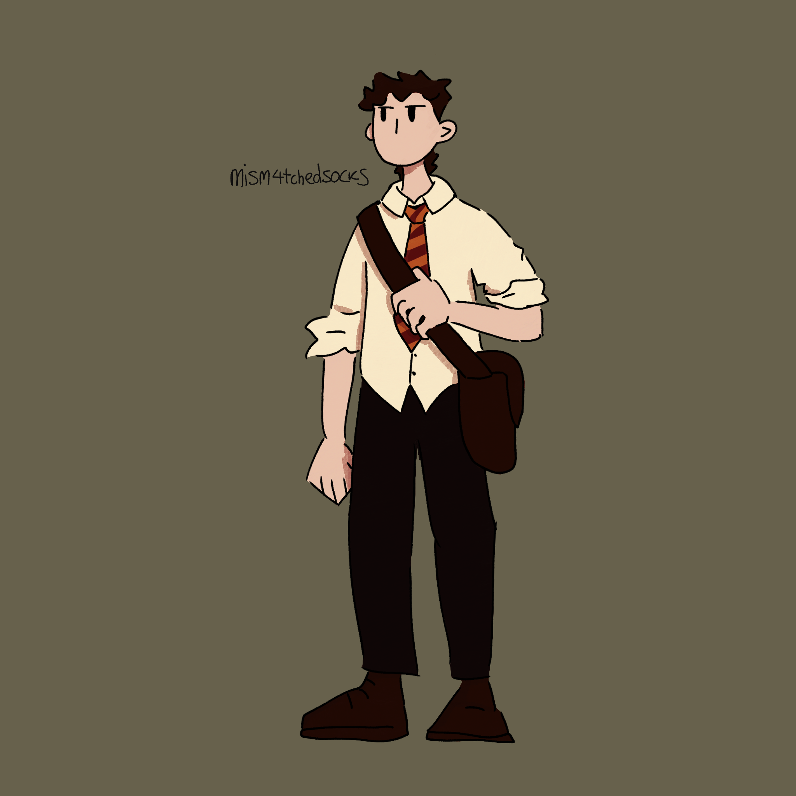 | aboutdate: 26-28/06/2024 |
| 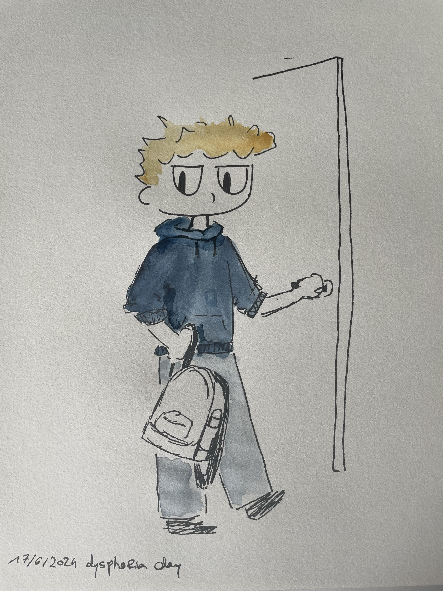 | aboutdate: 17/06/2024 |
 |
aboutdate: 3/06/2024 |
 |
aboutdate: ??/05/2024 |
| 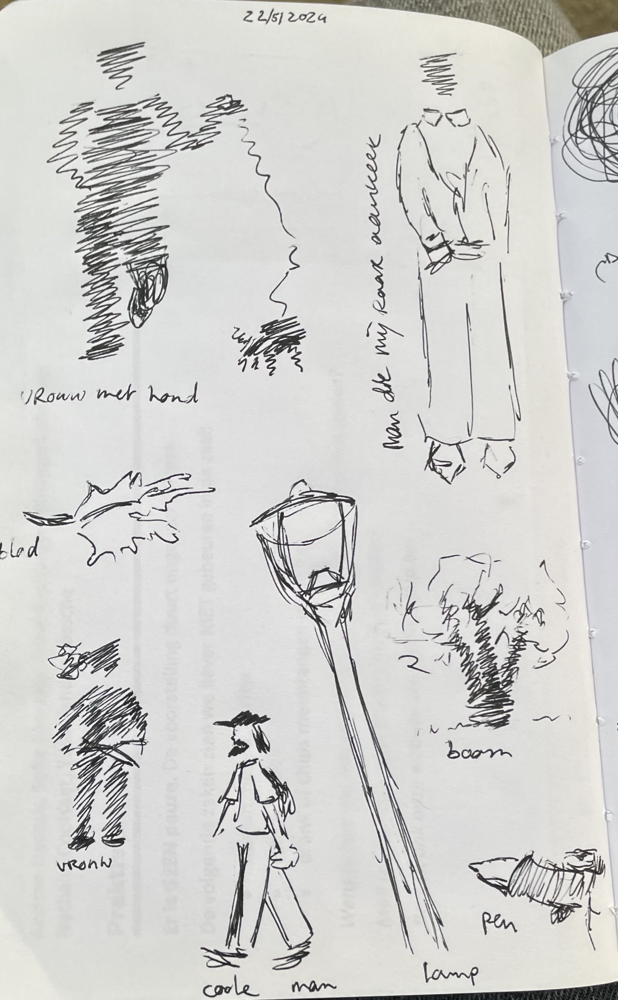 | 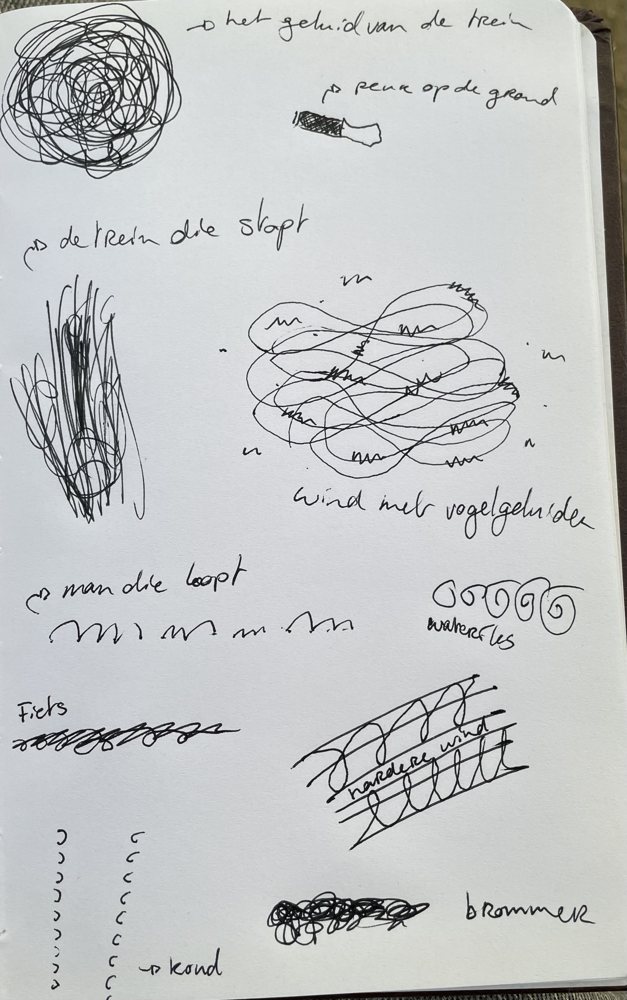 | aboutdate: 22/05/2024 |
 |
aboutdate: 15/05/2024 |
 |
aboutdate: 14/05/2024 |
| 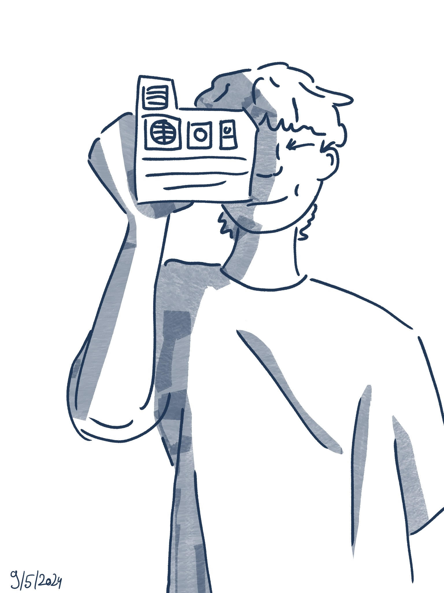 | aboutdate: 09/05/2024 |
| 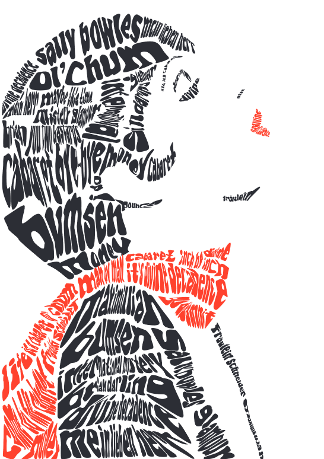 | aboutdate: finished on 22/02/2024medium: adobe illustrator notes: school project, started on 11/01/2024. worked on it 2-4 hours a week, together with the collage. i do NOT like illustrator. i've been getting better at it but it's still pretty confusing. i got good grades on this project though so yippee |
| 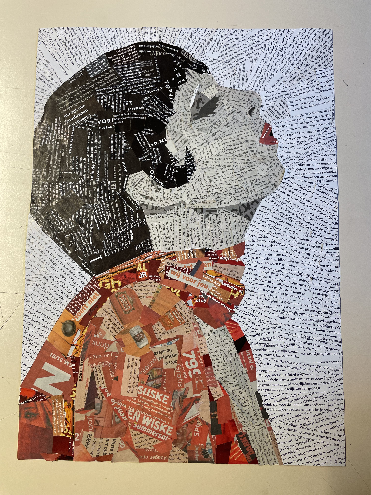 | aboutdate: finished on 08/02/2024medium: paper cutouts glued on paper notes: school project, started on 11/01/2024. worked on it 2-4 hours a week, together with the digital portrait. |
| 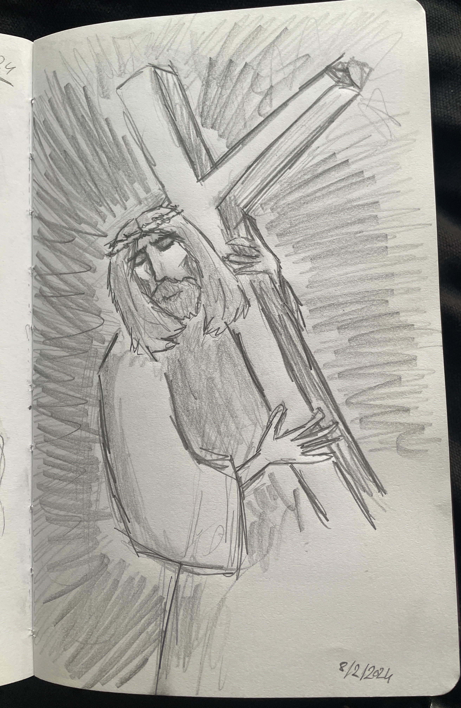 | aboutdate: 8/02/2024medium: pencil on paper notes: i used a classical painting as a reference for this if i remember correctly. |
| 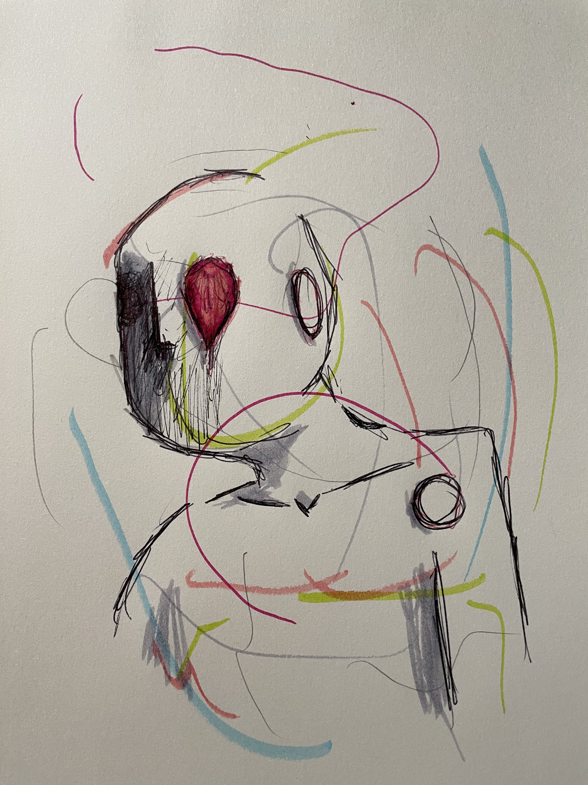 | aboutdate: 3/02/2024medium: markers and ballpoint pen on paper notes: i saw someone on instagram i think blindly picking markers or pens from their pencil case and then blindly drawing until they started seeing something in their drawing. i made a few of these, but this is the only one i liked! |